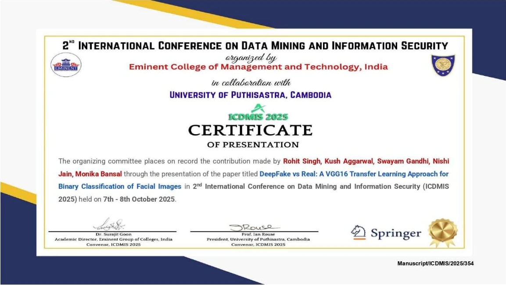
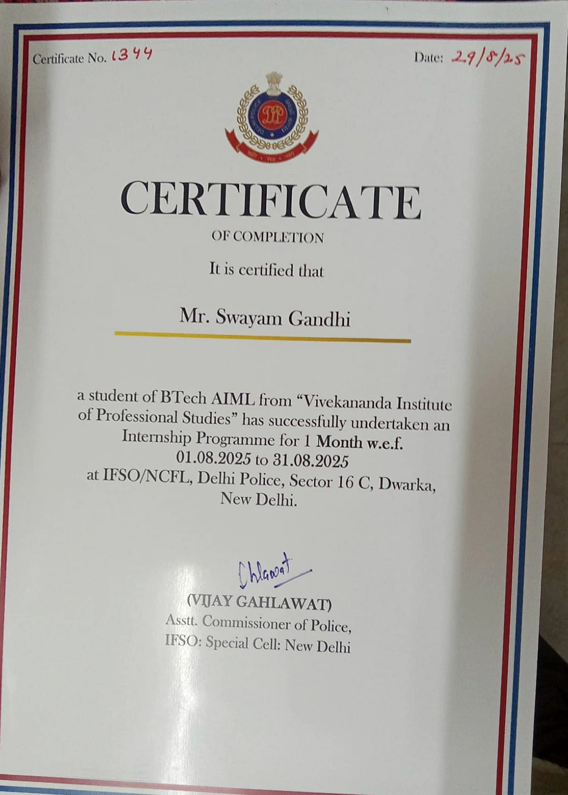
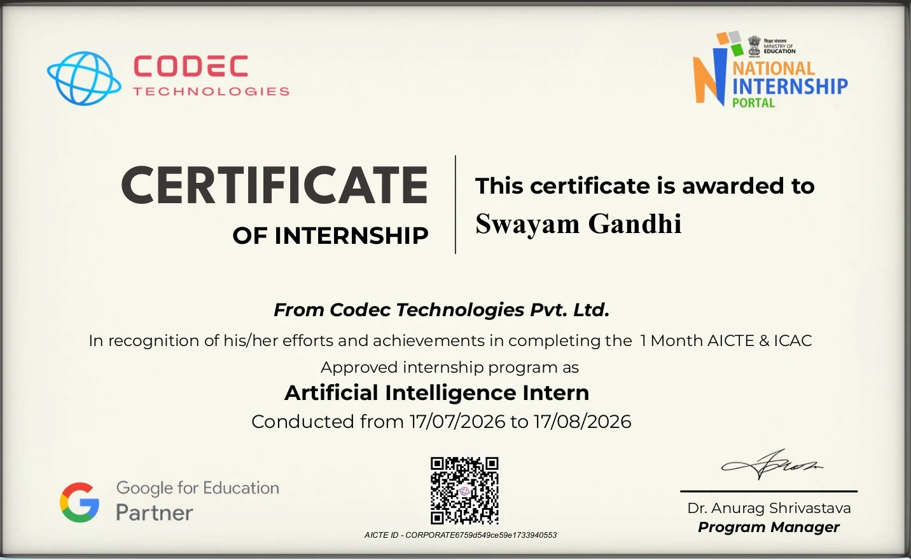
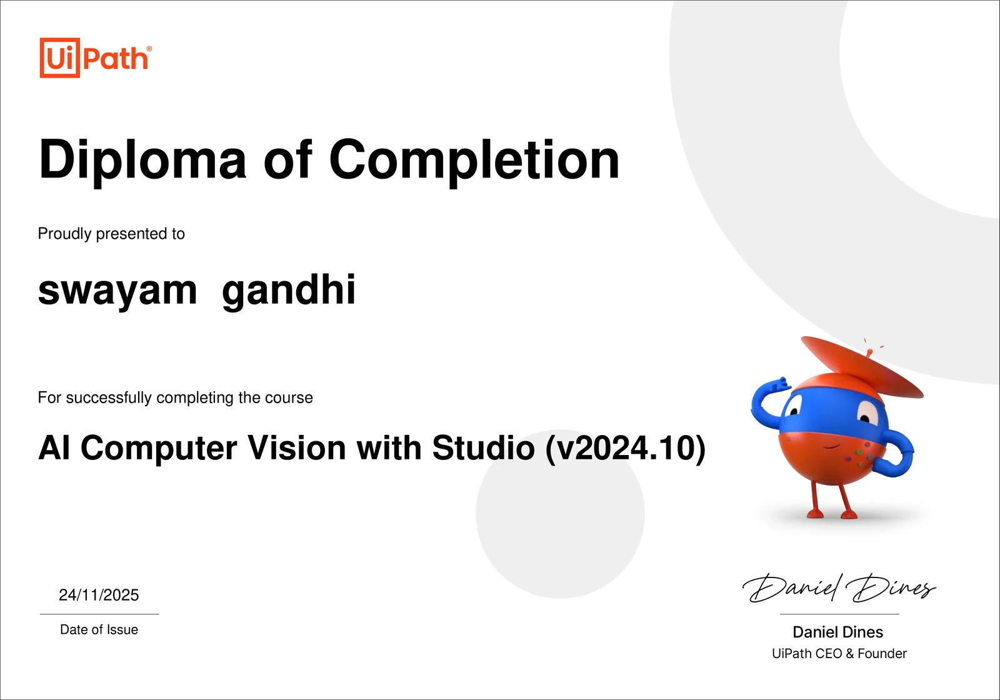

RESEARCH PRESENTATION · OCT 2025
ICDMIS 2025
Presented the co-authored VGG16 deepfake paper at the 2nd International Conference on Data Mining and Information Security.
Open certificate ↗01 / PROFILE
AI/ML engineering student building Python backend services and practical LLM applications.
BTech AI & ML at VIPS, graduating May 2027. I built Python automation at Delhi Police’s National Cyber Forensics Laboratory and co-authored published VGG16 deepfake research.
SUBMISSIONS OVER THE LAST 365 DAYS —
@bfcCpyaabO ↗Certificates and conference presentation.

RESEARCH PRESENTATION · OCT 2025
Presented the co-authored VGG16 deepfake paper at the 2nd International Conference on Data Mining and Information Security.
Open certificate ↗
INTERNSHIP · AUG 2025
Completed a one-month internship at the National Cyber Forensics Laboratory in New Delhi.
Open certificate ↗
AI INTERNSHIP · JUL 2026
Completed a four-week AICTE and ICAC-approved training program.
Open certificate ↗
COURSE COMPLETION · NOV 2025
Completed the UiPath course for AI Computer Vision with Studio, version 2024.10.
Open certificate ↗FEATURED CONFERENCE PAPER · ICDMIS 2025 · PUBLISHED 2026
Co-authored with Rohit Singh, Kush Aggarwal, Nishi Jain, and Monika Bansal. Published in Data Mining and Information Security (ICDMIS 2025); the paper reports 84% validation accuracy using a VGG16 transfer-learning model.
RESEARCH IN PROGRESS · LONG-VIDEO EFFICIENCY
Exploring how to select the most informative frames from long videos before sending them to a vision model—reducing visual tokens and inference cost while retaining the moments that matter.
Tools I use across backend, data, and applied AI projects.
Python · FastAPI · REST APIs · WebSockets · JWT authentication · asynchronous services
PostgreSQL · MySQL · Redis · FAISS · vector embeddings · semantic search
TensorFlow · CNNs · VGG16 transfer learning · Hugging Face Transformers
RAG · LangChain · OpenAI API · Gemini API · prompt engineering · conversation memory
JavaScript · TypeScript · SQL · React · Next.js
Git · Linux · Postman · FFmpeg
Applied AI, computer vision, and backend systems.
Built a full-stack customer-service chatbot with a FastAPI backend and React interface. Added WebSocket chat, Redis-backed session state and caching, and pub/sub signals for live-agent escalation.
Prototyped an AI marketing workflow for solo founders, with a Next.js and TypeScript interface, a Python and FFmpeg video-processing core, and Gemini multimodal analysis. Includes multi-platform content adaptation and experimentation views.
Built an image-detection app with a CNN classifier, Flask REST inference API, and React dashboard. Trained and evaluated across 100,000+ images from FaceForensics++ and Kaggle data.
Work, study, and training.
Codec Technologies
Completed a four-week program covering machine learning, neural networks, CNNs, NLP, and reinforcement learning. Built an LLM chatbot using prompt engineering and retrieval workflows.
IFSO, Delhi Police — National Cyber Forensics Laboratory · New Delhi
Vivekananda Institute of Professional Studies · New Delhi
Seeking backend engineering and applied AI internships. Graduating May 2027.